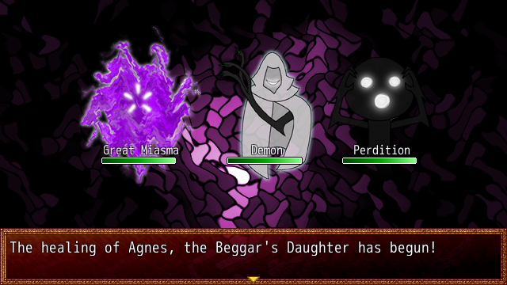

The Making of a Game Jam Game: Pestilence Stirs
The Jam
I participated in a game jam (RPG Maker Jam 3) for the first time this weekend. The jam lasted for 3 days, with around 300 participants and 81 entries. I worked alone for this game, but a friend helped brainstorm and check the story for issues.
I wanted to practice my writing and art to better prepare for Rondo of Wizardry and Love and future narrative-heavy games. Thus, my goal for this game jam was to make a short (20-30 minute) RPG.
You can download it here.
Day 1
The jam began on Friday (7/20), and the theme was revealed: "Contagious." When I read that, I immediately thought of disease and zombies. I chose the "disease" route since I didn't want to make a zombie game, which I suspected there would be a lot of entries. I decided on a plague doctor theme.
I started on the design decisions first. I chose VX Ace over MV as the engine since I have nearly 5000 hours with VX Ace, and I needed to prioritize speed. For artstyle, I decided on using Looseleaf-style sprites and the Mack Tileset. I chose this style because the Looseleaf generator had a lot of options for composite sprites, which lets me make a large variety of sprites quickly. Mack's tiles goes well with them, since Looseleaf IS Mack, but confusingly Mack-style sprites and Looseleaf-style sprites are different. Thankfully his tileset is very comprehensive so an entire game can be made exclusively using his tiles.
For gameplay, I chose a front-view battle system. Since the game would be about a plague doctor curing people, the battles were against the things Middle Ages people thought caused illnesses: Miasma, unbalanced humors, evil spirits, wrath of God, etc. The player would use historical methods like leeches or holy water to defeat these maladies. Some time was spent on researching plague causes and treatments, and trying to remember bits of information from my AP European History class in high school.
Once I felt I had enough information, I wrote a draft of the script. The main character would be a plague doctor who was sent by the King to various cities to cure important people. I chose to have five cities to keep things short while also having enough content gameplay-wise. However, this meant I had to name a whole bunch of cities, countries, and people, which is something that takes me a long time to decide on.
- Concept: 100%
- Story: 40%
- Scripting: 0%
- Music: 0%
- Tilesets: 100%
- Sprites: 10%
- Iconset: 0%
- Battlers: 0%
- Battlebacks: 0%
- Database: 0%
- Mapping and Eventing: 0%
Day 2
I started the project in the engine, and imported the scripts I would be using, as well as writing my own. Many of these were salvaged from my cancelled game, Windra's Endgame, such as the battle interface and other UI changes. However, there were some issues with transferring scripts over, and I ended up spending more time than I would have liked on this. I was able to finish it completely in this day.
It was time to do work with the database, such as skills and items. I settled for 4 skill categories in battle: Creatures, Miracles, Food / Drink, and Solutions. I was able to implement this system quickly since I had already done something similar in Gate of Providence. I added the majority of the enemies, which were Miasmas (colored by the colors of the humors), Spirits (curses, ghosts, and demons), and Angels (wrath of God). However, I did not create the actual artwork yet. I would have to draw them myself since I don't have an artist helping me.
The story was finalized with the help of my friend Edwin, who double-checked it and provided some feedback. With some corrections to the script, the story was completed, and was ready to be put into the game. With that done, I could make the final versions of the character sprites. It wasn't too bad, but it was annoying to have to zoom in on a browser page for the generator. I only made sprites critical to the plot for time purposes.
For music, I rummaged through various Japanese sites for some decent sounding music that also fit the mood. I normally use Firefox, but Google Chrome came in handy with the automatic translation. I went for a circle named Rengoku Teien, which had a nice selection of music, but none of it was looped. I'll have to loop it myself in the future. A lot of time was spent going through their collection, and then deciding which songs were fit for use. I did this in parallel with story-writing and sprite-making.
- Story: 100%
- Scripting: 100%
- Music: 50%
- Sprites: 70%
- Iconset: 90%
- Battlers: 0%
- Battlebacks: 0%
- Database: 80%
- Mapping and Eventing: 0%
Day 3
On the final day, I drew the title screen art to give the game some personality. In it is William, in his white cloak (story element), walking away, leaving a dark path with shadowy hands crawling out. I used this as a recurring theme for the battlers, so many of the evil spirits have that style of hand or arm. Once that was done, I started making the battlebacks, which I opted for an abstract style. I used Photoshop to make a stained glass pattern, and then used the Wave filter to distort it. For battlers, I had to draw them like I did for Gate of Providence. Rough sketch, outlined with pen tool, and color. For the Miasma enemies, I made a smoke effect using Photoshop's distortion filters and recolored them. In the end, the battlers look a bit janky thanks to my weak drawing abilities, but their goofy look is slowly growing on me.

I had to make the maps next, and event the cutscenes. I realized that I had not made enough sprites, since there were other NPCs that were present in the scene but didn't have a dialogue line. I managed to make them, but unfortunately time was running out and it didn't help that I have never used Mack's tiles before. In the end, I was only able to implement two out of five chapters before the jam ended. However, since I had already finished the script and 90% of the sprites, I was able to make a theater-style telling of the story, in case players wanted to just read the story and play the battles.
- Music: 95%
- Sprites: 90%
- Iconset: 95%
- Battlers: 100%
- Battlebacks: 100%
- Database: 95%
- Mapping and Eventing: 40%
What's Next for Pestilence Stirs
I plan on finishing this game and adding some more details to the world and maps that I had to cut due to time constraints. Here's what's left:
- Music: Mostly complete, but it needs to be looped. I will have to go into Audacity and find/set the loop points myself.
- Sprites: Non-essential NPCs and animals need to be made to add some more variety to the game world.
- Iconset: I need to add icons for some of the status effects that the enemies can inflict.
- Database: I'm planning on adding some more attacks for the enemies to use to diversify combat.
- Mapping and Eventing: Obviously needs to be done in order to be able to call this game finished.
- Trimming Resources: I will also be going through the Animations/Sound Effects and deleting the ones I'm not using. I had imported all of the RTP Animations due to time constraints, which doubled the filesize of the game. Thankfully those are the only things I imported from the RTP, so the clean-up process is not complicated.
- Webpage: I will put a section on the website for this game soon.
What I will not be doing is expanding the game any further! This game was meant to be a short game, and I don't want to have another project to manage. After all, I'm still working on Rondo of Wizardry and Love and Project Roguelike! Though I am still open to making very short (less than 1 hour long) games.
In conclusion, this game jam was a very fun experience. I will go into further detail in a postmortem when I release the full game.